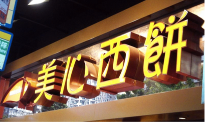
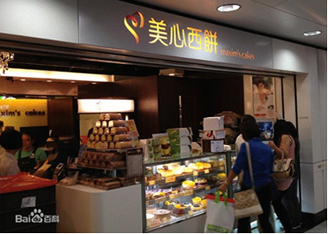
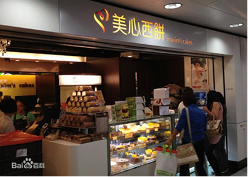

公司简介
2014-10-08
1993年第一块鲜亮醒目的“元祖红”招牌在四川北路竖起，由天才营销大师张秀琬女士精心培育的台湾元祖食品 正式进驻上海、进驻中国大陆，上海元祖食品有限公司从此诞生。今天，这块元祖红招牌已遍布中国各大城市， 并成为家喻户晓的“精致礼品名家代言者”。
1993年第一块鲜亮醒目的“元祖红”招牌在四川北路竖起，由天才营销大师张秀琬女士精心培育的台湾元祖食品 正式进驻上海、进驻中国大陆，上海元祖食品有限公司从此诞生。今天，这块元祖红招牌已遍布中国各大城市， 并成为家喻户晓的“精致礼品名家代言者”。

关注公众号
导航到店
一键拨号